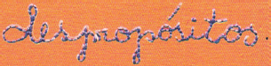

Manoel de Barros
O menino era ligado em

Quis montar os alicerces de uma casa sobre orvalhos.
A mãe reparou que o menino
Gostava mais do vazio
Do que do cheio.
Falava que os vazios são maiores
E até infinitos.
Com o tempo aquele menino
Que era cismado e esquisito
Porque gostava de carregar água na peneira
BARROS, M. de. Exercício de ser criança / bordados de Antônia Zulma Diniz, Ângela Marilu e Sávia Dumont sobre desenhos de Demóstenes Vargas. Rio de Janeiro: Salamandra, 1999.(fragmento)
O texto e os bordados inventam uma realidade mágica e uma estética do corpo em movimento. Esses elementos expressivos mostram algumas características de linguagem:
São características de linguagem evidenciadas no texto APENAS